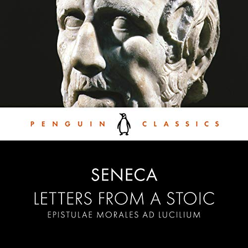
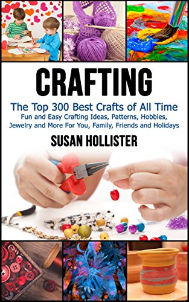

The republic
Meditations of Marcus Aurelius
Letters from a Stoic

The Birth of Tragedy

BEYOND GOOD AND EVIL

Ancient Rome
The Wild Robot

WHAT IF?

The Botanist's Sticker Anthology

Bug Soup
Space Force: Chepo Team
One of Us Is Lying
Legends
True Crime Stories
Rhythm of War
Flesh & Bone

If She Knew
You'll Come Back to Yourself

In Sheep's Clothing

The Return
Skin Tight
Dune

Dragons at Crumbling Castle
The Money GPS
Crafting

The Bob's Burgers Burger Book

The Housekeeper
Diary Of A Bookseller

New Oxford American Dictionary
Montana Territory
Rage
Find Your Artistic Voice
Elon Musk
Myths, Legends, and Sacred Stories
The Mind-Gut Connection
Humor, Seriously
Air War in the Pacific
The Holy Qur'an
The Science Book